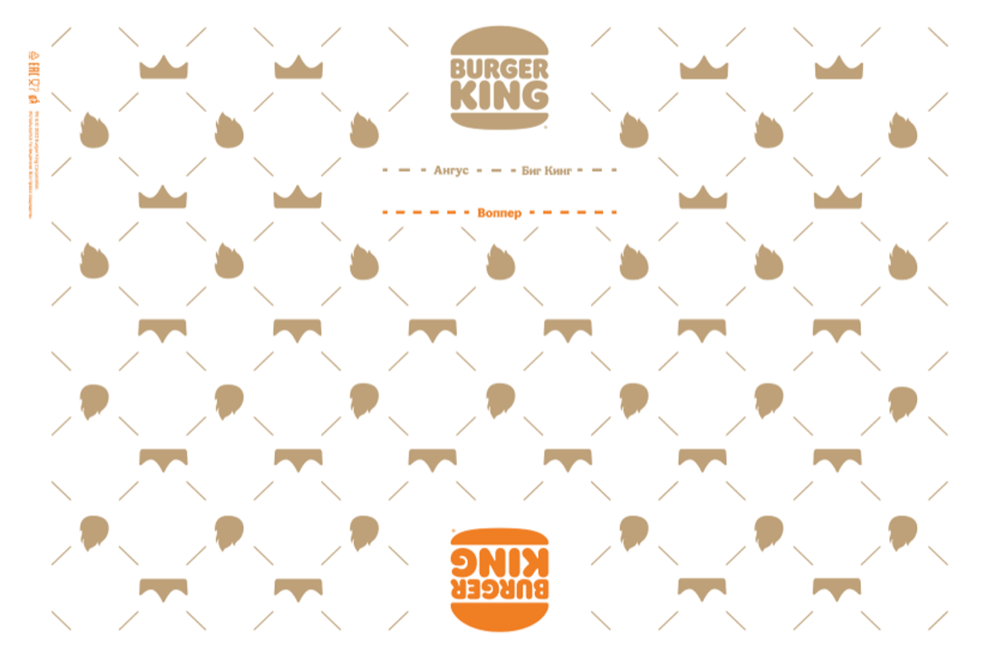

Воппер Ниндзя
Новый соус «Чёрный Ниндзя» уже в игре. Разберёшься, как с ним работать, и доведёшь до автоматизма сборку и упаковку Воппера.
Главы
Соус «Чёрный Ниндзя»
Что за вкус месяца, почему он именно такой и как с ним работать: хранение, инвентарь, нанесение и лайфхак. Посмотри видео целиком.
Широкий носик-сквизер и наклейка «Вкус месяца», FIFO и маркировка сроков. В Воппер — 3 оборота, 14 г. Застрял в носике — постучи тубой дном о борт.
Тест по соусу
Вопросы по соусу «Чёрный Ниндзя» добавим сюда позже. Пока просто переходи дальше — к стандартам сборки и упаковки.
Стандарты сборки и упаковки
Две игры: собери Воппер в правильном порядке, затем закрой и заверни упаковку. В конце получишь обратную связь по каждой.
Перетаскивай ингредиенты из набора на платформу — сверху вниз, в правильном порядке сборки.
Начни с верхней булочки.
Разверни оберточную бумагу правильной стороной — оранжевым лого к себе (к сборщику). Нажимай на лист, чтобы повернуть его на 90°.

Нажми, чтобы повернутьОтлично, лист развёрнут верно. Теперь сдвинь Воппер к отметке «Воппер» — тяни его пальцем или мышкой (двигается только вверх-вниз).
Как ты справился
Вот итог по двум играм. Разбираем, что открыто как обязательное, а что — по желанию.
Видео-разборы
Если тест не пройден — видео обязательно к просмотру, чтобы завершить курс. Пройденное — по желанию.
Сначала посмотри обязательные видео выше.